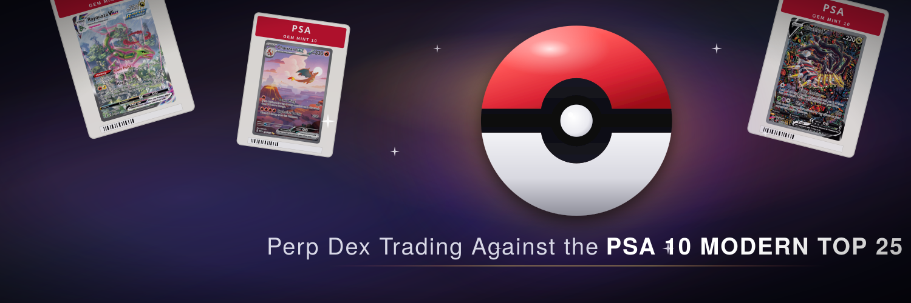
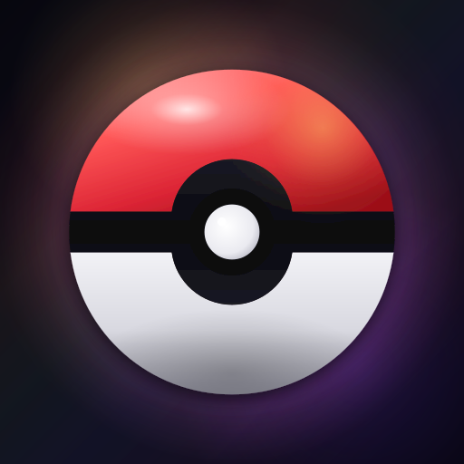

Logo mark + X banner. Review the banner at full bleed and in the X profile mockup (which approximates how the avatar circle covers the bottom-left). Banner is 1500×500 — X's recommended upload size.

The avatar uses the new x-icon.svg (Pokeball on the same cosmic-foil background as the banner). The two should read as a coordinated set.
The original logo-mark.svg (no background) — adapts to X's theme but doesn't visually echo the banner.

32Kept around for cases that need a transparent mark (favicon on light backgrounds, embedding inside other UIs).
If the engraving on the avatar looks too busy at small sizes, I can swap in a pure (unengraved) Pokeball mark just for the profile pic. Tagline copy and accent colors on the banner are all dial-able.